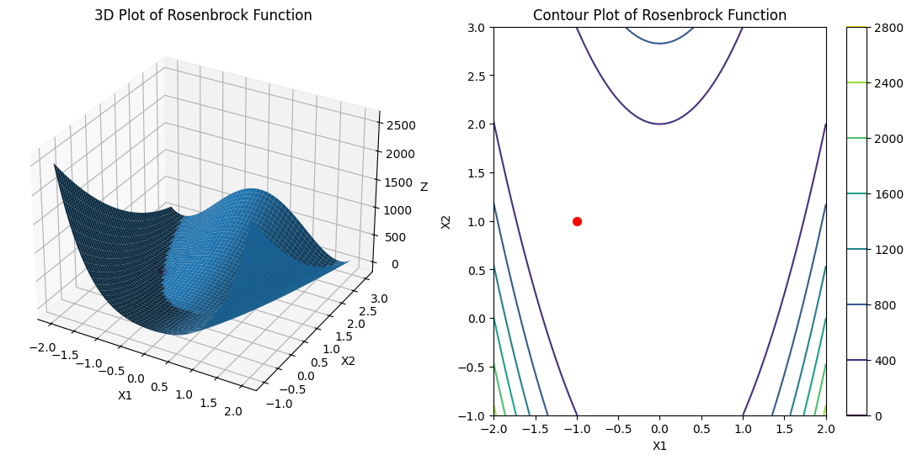
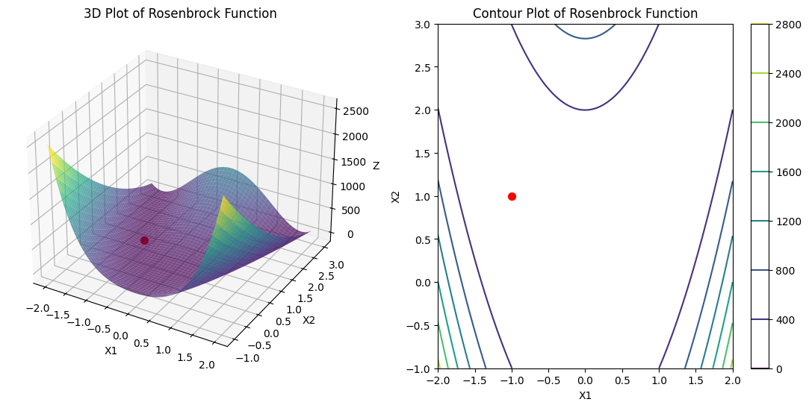
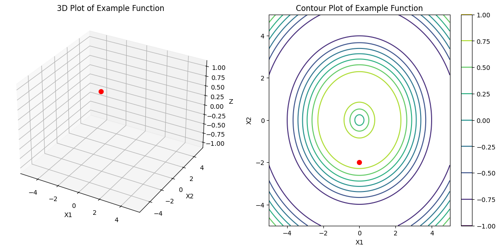

Code
import numpy as np
import matplotlib.pyplot as plt
from mpl_toolkits.mplot3d import Axes3DMatplotlib is building the font cache; this may take a moment.Matplotlib is building the font cache; this may take a moment.import numpy as np
# Función de Rosenbrock
def rosenbrock(x1, x2, a=1, b=100):
return (a - x1)**2 + b * (x2 - x1**2)**2
# Función de Schwefel
def schwefel(x1, x2):
return 418.9829 * 2 - (x1 * np.sin(np.sqrt(np.abs(x1))) + x2 * np.sin(np.sqrt(np.abs(x2))))
# Función de Griewank
def griewank(x1, x2):
return 1 + (x1**2 + x2**2) / 4000 - (np.cos(x1 / np.sqrt(1)) * np.cos(x2 / np.sqrt(2)))
# Función Goldstein-Price
def goldstein_price(x1, x2):
term1 = 1 + (x1 + x2 + 1)**2 * (19 - 14*x1 + 3*x1**2 - 14*x2 + 6*x1*x2 + 3*x2**2)
term2 = 30 + (2*x1 - 3*x2)**2 * (18 - 32*x1 + 12*x1**2 + 48*x2 - 36*x1*x2 + 27*x2**2)
return term1 * term2
# Función de las seis jorobas de camello
def six_hump_camel(x1, x2):
return (4 - 2.1*x1**2 + (x1**4) / 3) * x1**2 + x1 * x2 + (-4 + 4*x2**2) * x2**2def plot_function(f, x1_range, x2_range, title="Function Plot"):
x1 = np.linspace(x1_range[0], x1_range[1], 400)
x2 = np.linspace(x2_range[0], x2_range[1], 400)
X1, X2 = np.meshgrid(x1, x2)
Z = f(X1, X2)
fig = plt.figure(figsize=(14, 6))
# 3D plot
ax1 = fig.add_subplot(121, projection='3d')
ax1.plot_surface(X1, X2, Z)
ax1.set_title(f'3D Plot of {title}')
ax1.set_xlabel('X1')
ax1.set_ylabel('X2')
ax1.set_zlabel('Z')
# Contour plot
ax2 = fig.add_subplot(122)
contour = ax2.contour(X1, X2, Z)
ax2.set_title(f'Contour Plot of {title}')
ax2.set_xlabel('X1')
ax2.set_ylabel('X2')
fig.colorbar(contour, ax=ax2)
plt.show()
def plot_function(f, x1_range, x2_range, title="Function Plot", x1_point=None, x2_point=None):
x1 = np.linspace(x1_range[0], x1_range[1], 400)
x2 = np.linspace(x2_range[0], x2_range[1], 400)
X1, X2 = np.meshgrid(x1, x2)
Z = f(X1, X2)
fig = plt.figure(figsize=(14, 6))
# 3D plot
ax1 = fig.add_subplot(121, projection='3d')
ax1.plot_surface(X1, X2, Z)
ax1.set_title(f'3D Plot of {title}')
ax1.set_xlabel('X1')
ax1.set_ylabel('X2')
ax1.set_zlabel('Z')
if x1_point is not None and x2_point is not None:
z_point = f(x1_point, x2_point)
ax1.scatter(x1_point, x2_point, z_point+1, color='red', s=50)
# Contour plot
ax2 = fig.add_subplot(122)
contour = ax2.contour(X1, X2, Z, cmap='viridis')
ax2.set_title(f'Contour Plot of {title}')
ax2.set_xlabel('X1')
ax2.set_ylabel('X2')
fig.colorbar(contour, ax=ax2)
if x1_point is not None and x2_point is not None:
ax2.scatter(x1_point, x2_point, color='red', s=50)
plt.show()
# Ejemplo de uso con la función de Rosenbrock
def rosenbrock(x1, x2, a=1, b=100):
return (a - x1)**2 + b * (x2 - x1**2)**2
plot_function(rosenbrock, x1_range=(-2, 2), x2_range=(-1, 3), title="Rosenbrock Function", x1_point=-1, x2_point=1)

def plot_function(f, x1_range, x2_range, title="Function Plot", x1_point=None, x2_point=None):
x1 = np.linspace(x1_range[0], x1_range[1], 400)
x2 = np.linspace(x2_range[0], x2_range[1], 400)
X1, X2 = np.meshgrid(x1, x2)
Z = f(X1, X2)
fig = plt.figure(figsize=(14, 6))
# 3D plot
ax1 = fig.add_subplot(121, projection='3d')
if x1_point is not None and x2_point is not None:
z_point = f(x1_point, x2_point)
ax1.scatter(x1_point, x2_point, z_point, color='red', s=50, depthshade=False) # Ajuste pequeño
ax1.plot_surface(X1, X2, Z, cmap='viridis', alpha=0.7)
ax1.set_title(f'3D Plot of {title}')
ax1.set_xlabel('X1')
ax1.set_ylabel('X2')
ax1.set_zlabel('Z')
# Contour plot
ax2 = fig.add_subplot(122)
contour = ax2.contour(X1, X2, Z, cmap='viridis')
ax2.set_title(f'Contour Plot of {title}')
ax2.set_xlabel('X1')
ax2.set_ylabel('X2')
fig.colorbar(contour, ax=ax2)
if x1_point is not None and x2_point is not None:
ax2.scatter(x1_point, x2_point, color='red', s=50)
plt.show()
# Ejemplo de uso con la función de Rosenbrock
def rosenbrock(x1, x2, a=1, b=100):
return (a - x1)**2 + b * (x2 - x1**2)**2
plot_function(rosenbrock, x1_range=(-2, 2), x2_range=(-1, 3), title="Rosenbrock Function", x1_point=-1, x2_point=1)
def plot_function(f, x1_range, x2_range, title="Function Plot", x1_point=None, x2_point=None):
x1 = np.linspace(x1_range[0], x1_range[1], 400)
x2 = np.linspace(x2_range[0], x2_range[1], 400)
X1, X2 = np.meshgrid(x1, x2)
Z = f(X1, X2)
fig = plt.figure(figsize=(14, 6))
# 3D plot
ax1 = fig.add_subplot(121, projection='3d')
# Primero dibujamos la superficie
surface = ax1.plot_surface(X1, X2, Z, cmap='viridis', alpha=0.7)
# Luego dibujamos el punto
if x1_point is not None and x2_point is not None:
z_point = f(x1_point, x2_point)
ax1.scatter(x1_point, x2_point, z_point, color='red', s=100, depthshade=False, linewidth=2, edgecolor='black')
ax1.set_title(f'3D Plot of {title}')
ax1.set_xlabel('X1')
ax1.set_ylabel('X2')
ax1.set_zlabel('Z')
import numpy as np
import plotly.graph_objects as go
from plotly.subplots import make_subplots
def plot_function_3d(f, x1_range, x2_range, title="Function Plot", x1_point=None, x2_point=None):
# Create the mesh grid
x1 = np.linspace(x1_range[0], x1_range[1], 100)
x2 = np.linspace(x2_range[0], x2_range[1], 100)
X1, X2 = np.meshgrid(x1, x2)
Z = f(X1, X2)
# Create subplots
fig = make_subplots(
rows=1, cols=2,
specs=[[{'type': 'surface'}, {'type': 'contour'}]],
subplot_titles=('3D Surface Plot', 'Contour Plot')
)
# Add surface plot
fig.add_trace(
go.Surface(x=X1, y=X2, z=Z, colorscale='viridis', opacity=0.8),
row=1, col=1
)
# Add point if specified
if x1_point is not None and x2_point is not None:
z_point = f(x1_point, x2_point)
fig.add_trace(
go.Scatter3d(
x=[x1_point],
y=[x2_point],
z=[z_point],
mode='markers',
marker=dict(size=8, color='red'),
name='Point'
),
row=1, col=1
)
# Add contour plot
fig.add_trace(
go.Contour(
x=x1,
y=x2,
z=Z,
colorscale='viridis'
),
row=1, col=2
)
# Update layout
fig.update_layout(
title=title,
width=1200,
height=500,
scene=dict(
xaxis_title='X1',
yaxis_title='X2',
zaxis_title='Z'
)
)
fig.show()
# Test the function
def rosenbrock(x1, x2, a=1, b=100):
return (a - x1)**2 + b * (x2 - x1**2)**2
plot_function_3d(rosenbrock, (-2, 2), (-1, 3), "Rosenbrock Function", x1_point=-1, x2_point=1)
plot_function(rosenbrock, x1_range=(-5, 5), x2_range=(-5, 15), title="Rosenbrock Function",x1_point=-1, x2_point=1)--------------------------------------------------------------------------- ModuleNotFoundError Traceback (most recent call last) Cell In[64], line 2 1 import numpy as np ----> 2 import plotly.graph_objects as go 3 from plotly.subplots import make_subplots 5 def plot_function_3d(f, x1_range, x2_range, title="Function Plot", x1_point=None, x2_point=None): 6 # Create the mesh grid ModuleNotFoundError: No module named 'plotly'